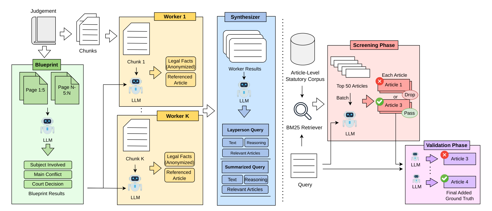
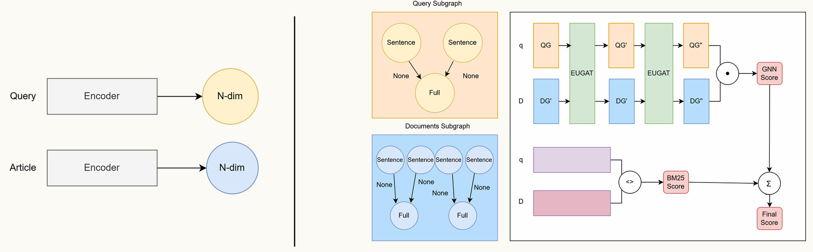
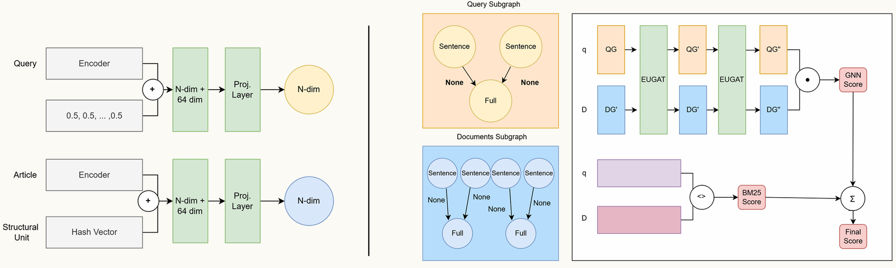

Structural Graph-Enhanced Statute Retrieval Across Diverse Legal Systems
Python, PyTorch, vLLM, Graph Neural Networks, Agentic Retrieval, Information Retrieval
Overview
Statute retrieval requires bridging the gap between narrative queries and formal statutory language - a challenge that intensifies as queries become less formal. Existing benchmarks evaluate at a single query formality level and rely on sparse citation-derived relevance judgments, preventing controlled comparison of how formality affects retrieval performance.
This thesis addresses three gaps. First, no existing dataset provides multi-formality evaluation with overlapping relevance labels derived from the same court decisions for Indonesian statute law. Second, existing GNN-based retrievers either parse corpus-specific structure that does not generalize across jurisdictions, or ignore the legislative hierarchy entirely. Third, agentic retrieval for statute retrieval has not been combined with structural graph-based retrieval.
Contributions
- PERSTAT, the first Indonesian statute retrieval dataset providing two query formality levels (summarized case and layperson), derived from the same court decisions over 2,127 articles in the KUHPerdata (Indonesian Civil Code). Ground truth is expanded via a two-phase LLM screening and validation pipeline, verified by three law student annotators.
- StructGNN, a graph neural network that extends Para-GNN with structural node features encoding legislative hierarchy as deterministic hash embeddings. The method requires only a title parser and the order of appearance of articles within structural units, making it simpler to adapt to new corpora than approaches requiring full legislative graph construction.
-
Agentic extension, an LLM-orchestrated retrieval agent (powered
by Qwen3.5-35B via vLLM) combining StructGNN with iterative search through four tools:
search_corpus,grep_corpus,read_document, andprune_chunks. Inspired by Chroma Context-1. - Evaluation on four corpora in four languages, each trained and evaluated independently: PERSTAT (Indonesian), BSARD (French), STARD (Chinese), and COLIEE (English).
Dataset: PERSTAT
PERSTAT is constructed from 8,000+ Indonesian civil court decision PDFs over the KUHPerdata (Indonesian Civil Code, 2,127 articles). The dataset provides two query formality levels derived from the same court decisions: summarized case queries and layperson queries, totaling 1,981 queries per variant.
The creation pipeline consists of three phases:
- Query Extraction - court decision PDFs are processed through a three-phase LLM pipeline (blueprint, worker, synthesizer) to extract legal facts and citation-based relevance labels. Two query variants are generated per case: a summarized case version and a layperson version.
- Ground Truth Expansion - a two-phase LLM pipeline (screening + validation) expands the sparse citation-based labels. The screening phase evaluates candidates in batch, then the validation phase re-checks each candidate individually with strict element-by-element verification. Overall acceptance rate is 0.4-0.5%.
- Human Validation - three final-year law students independently annotated 80 query-article pairs to verify the expanded ground truth labels.

Architecture
StructGNN adapts the Para-GNN framework, which constructs separate query and document subgraphs. Each query is split into sentences (nodes) linked to a full-query root node, and each article is split into sentences linked to paragraph-level root nodes. A shared BGE-M3 encoder produces N-dimensional embeddings for both queries and articles. The query and document subgraphs are then processed through a two-layer EUGAT network that updates node representations via attention-weighted message passing over both node and edge features. The final retrieval score combines the GNN dot-product score with a BM25 lexical score through a learned blending weight.


Approach
StructGNN injects hierarchical structure directly into node features rather than constructing explicit cross-article edges. Each statute node receives a structural hash (a 64-dimensional deterministic pseudo-random vector derived from its structural unit name via SHA-256) and a positional rank encoding (a 32-dimensional sinusoidal vector based on the article's normalized position within its unit). These are concatenated with the 1024-dimensional BGE-M3 semantic embedding and projected back to 1024 dimensions via a learned linear layer with LayerNorm, then fed into a two-layer Edge-Updated Graph Attention (EUGAT) network.
The final retrieval score blends GNN and BM25 signals with a global blending weight selected via grid search. Training uses cross-entropy loss with inverse propensity score weighting to reduce hub document bias.
Results
StructGNN achieves statistically significant improvements on all corpora with hierarchical statute organization across three languages, validated with Wilcoxon signed-rank tests (Holm-corrected p < 0.001).
Table 4.1: Results on PERSTAT
| Method | Setting | Summarized Case | Layperson | ||||
|---|---|---|---|---|---|---|---|
| MRR@10 | R@10 | R@100 | MRR@10 | R@10 | R@100 | ||
| Inference Methods | |||||||
| BM25 | unigram | 0.080 | 0.114 | 0.248 | 0.033 | 0.043 | 0.118 |
| Dense | cosine similarity | 0.097 | 0.121 | 0.280 | 0.064 | 0.068 | 0.232 |
| GAR | corpus graph | 0.171 | 0.157 | 0.194 | 0.072 | 0.066 | 0.102 |
| SPLADE | sparse dot product | 0.059 | 0.065 | 0.224 | 0.026 | 0.054 | 0.154 |
| MILCO | base | 0.044 | 0.073 | 0.271 | 0.062 | 0.093 | 0.289 |
| MILCO (LE) | LexEcho | 0.049 | 0.075 | 0.272 | 0.054 | 0.071 | 0.285 |
| Finetuned Methods | |||||||
| CatBoost-BGE | product features | 0.424 | 0.539 | 0.741 | 0.516 | 0.657 | 0.825 |
| Adapted Para-GNN | adapted | 0.229 | 0.485 | 0.924 | 0.509 | 0.646 | 0.906 |
| StructGNN | struct. hash | 0.440 | 0.601 | 0.905 | 0.650 | 0.698 | 0.902 |
| Agentic Methods | |||||||
| Agentic + Dense | LLM orchestrated | 0.368 | 0.314 | - | 0.336 | 0.277 | - |
| Agentic + StructGNN | LLM orchestrated | 0.567 | 0.628 | - | 0.576 | 0.694 | - |
Table 4.2: Results on Additional Corpora
| Method | BSARD (FR) | STARD (ZH) | COLIEE (EN) | ||||||
|---|---|---|---|---|---|---|---|---|---|
| MRR@10 | R@10 | R@100 | MRR@10 | R@10 | R@100 | MRR@10 | R@10 | R@100 | |
| Inference Methods | |||||||||
| BM25 | 0.249 | 0.266 | 0.483 | 0.340 | 0.427 | 0.640 | 0.784 | 0.916 | 0.981 |
| Dense | 0.292 | 0.314 | 0.593 | 0.465 | 0.548 | 0.794 | 0.759 | 0.879 | 0.972 |
| GAR | 0.359 | 0.371 | 0.585 | 0.490 | 0.560 | 0.699 | 0.830 | 0.963 | 0.991 |
| SPLADE | 0.265 | 0.266 | 0.518 | 0.348 | 0.428 | 0.649 | 0.800 | 0.935 | 0.991 |
| MILCO | 0.318 | 0.323 | 0.635 | 0.445 | 0.527 | 0.728 | 0.739 | 0.897 | 0.981 |
| MILCO (LE) | 0.297 | 0.317 | 0.614 | 0.492 | 0.558 | 0.763 | 0.745 | 0.897 | 0.981 |
| Finetuned Methods | |||||||||
| CatBoost-BGE | 0.303 | 0.280 | 0.387 | 0.253 | 0.383 | 0.581 | 0.675 | 0.832 | 0.935 |
| Adapted Para-GNN | 0.441 | 0.468 | 0.766 | 0.520 | 0.629 | 0.828 | 0.800 | 0.935 | 0.981 |
| StructGNN | 0.570 | 0.606 | 0.861 | 0.599 | 0.697 | 0.887 | 0.812 | 0.944 | 1.000 |
| Agentic Methods | |||||||||
| Agentic + Dense | 0.552 | 0.459 | - | 0.687 | 0.708 | - | 0.917 | 0.972 | - |
| Agentic + StructGNN | 0.658 | 0.636 | - | 0.736 | 0.779 | - | 0.907 | 0.972 | - |
Ablation studies show that the structural hash alone is the primary contributor; positional encoding alone provides smaller gains and combining them can increase dimensionality without additional benefit.